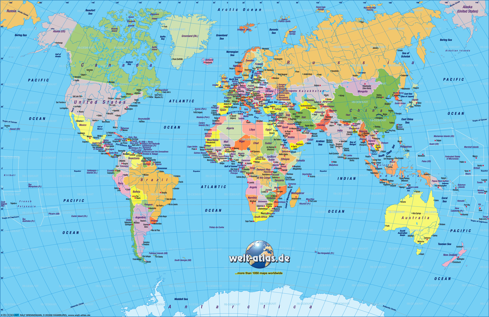
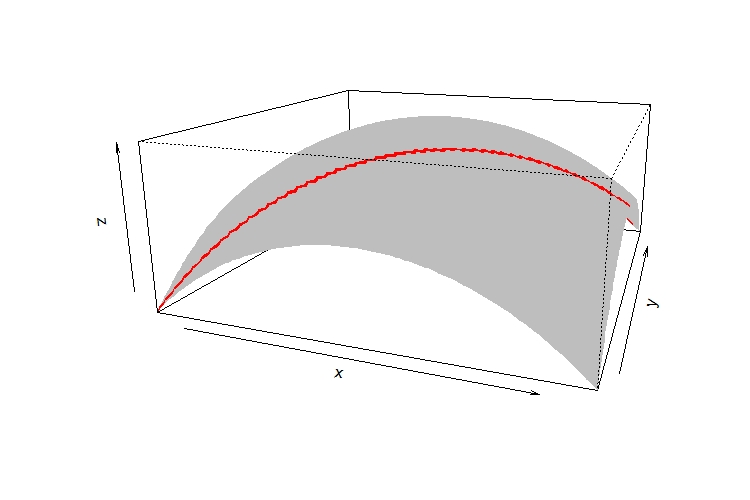
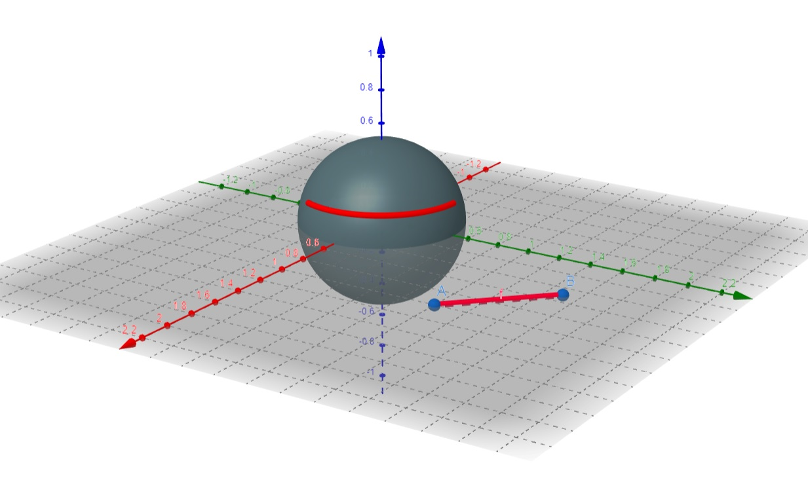
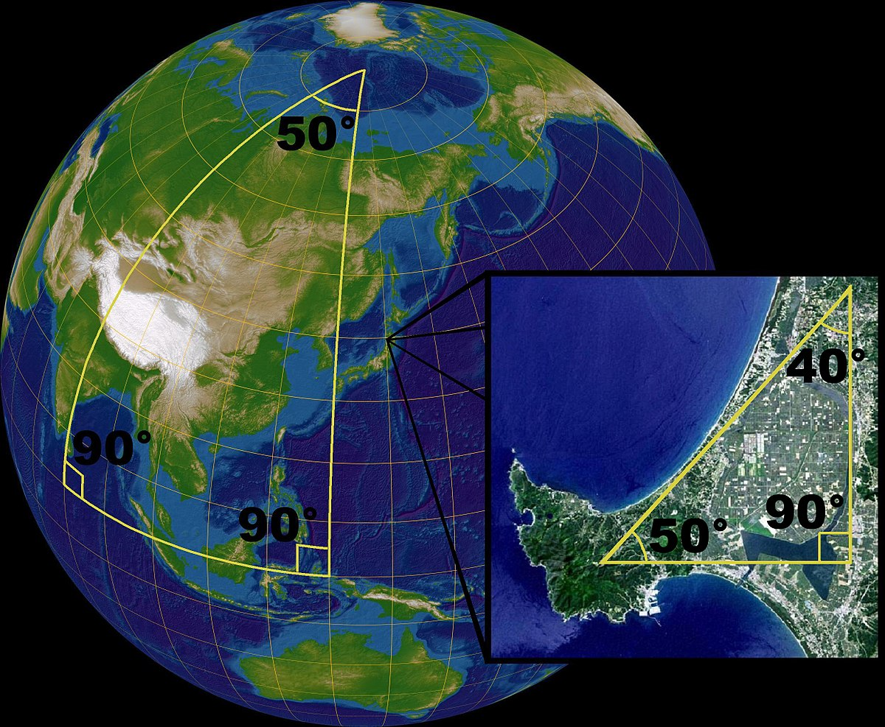
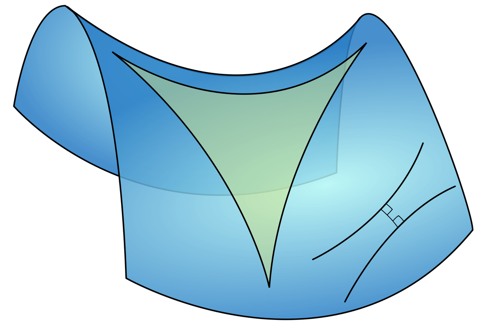

Intuitive Introduction to Differential Geometry
Subhrajyoty Roy
31 January, 2020
Approximate reading time is 11 minutes
Introduction
In high school level, we generally hear about Euclidean Geometry and Co-ordinate Geometry. If you are familiar in Co-ordinate Geometry, then you should be able to feel that theorems and consequences in Euclidean Geometry can be naturally extended to Co-ordinate Geometry. However, Co-ordinate Geometry is extremely specific to the coordinate system that we are using, for instance, if we are working on a plane (i.e. similar to Euclidean Geometry), then a planar coordinate system or Cartesian co-ordinate system is naturally used. However, when we are performing geometry on a sphere, naturally, a Polar coordinate system is used. However, suppose you are a Geographist, who wants to devise a coordinate system for the natural geography of Earth, clearly a Polar or Spherical Coordinate system does not work, since the shape is Earth is similar to that of an ellipsoid. So, it could be very much useful if we can generalize the idea of a coordinate system, to naturally represent any type of curvature, for instance, the image shown at the very beginning.
Most of the recent advancements of geometry are developed for the specific needs of visualizing different abstract concepts of diverse mathematical fields. Generalizing the idea of the coordinate system would allow one to think some abstract set (or family or collection of objects pertaining to the related mathematical theory) as a curvature, to which we can associate geometrical objects and visualize them in a different and distinguished way.
A General Curvature: Manifold
Suppose you want to create a map of the earth, however, the earth is not flat (at least I am not a believer of Flat Earth Theory), so one would primarily find it confusing that we can create a flat map of the earth. For example, consider the following map from World Atlas.

But see that, we have a single location (like some part of Alaska & Russia) being mapped to two different places in the map. Also note that, due to the curvature of earth’s surface, the supposedly gridlines are mapped to curved lines on the map. But if you look at it, there is a nice structure in the map, all the curved gridlines look very natural and aesthetically pleasing to understand. Moreover, if you draw tangent on the horizontal curves and tangent on the vertical curves, at their intersection point, you would find them meeting at a right angle. And if you are good at the field of Complex Analysis, then you would probably figure out that it has something to do with analytic functions.
Let us formalize the intuitions that we have. We have an arbitrary set $S$, which can be called a Manifold, if we have a one-one mapping $\phi : S\rightarrow \mathbb{R}^n$ for some $n\in \mathbb{N}$. Since the mapping is one-one, we can identify each point of $S$ by a $n$-length vector $v \in \mathbb{R}^n$, which can be used to serve as a coordinate system for the points in $S$. Going back to our example of earth, to identify a location in the surface of the earth, we lay out the map and find the x-coordinates (latitude) and the y-coordinates (longitude) of the particular location. So, we have a mapping (created by geographists) that maps $S$, the surface of the earth to $\mathbb{R}^2$. As you might have guessed, the number $n$ is the dimension of the manifold.
Let me cite another motivating example from Wikipedia page about Manifolds to show that only one mapping may not be good enough.

Note that, the circle is essentially a curved line, with ends being merged together. Clearly, it is a one dimensional structure, although embedded on a 2-dimensional plane. So, to interpret it as a manifold, we need to create (a or several) one-one mapping(s) from it to $\mathbb{R}$. Let us consider the circle having center at the origin and having radius equal to 1 unit. Here, we shall use $4$ different one-one mappings from part of the circle to the unit interval $[0, 1]$ which is a subset of $\mathbb{R}$.
$$\begin{align*}
\phi_{Top}((x, y)) & = (x + 1)/2 \text{ if } y \geq 0\
\phi_{Left}((x, y)) & = (y + 1)/2 \text{ if } x < 0\
\phi_{Right}((x, y)) & = (y + 1)/2 \text{ if } x \geq 0\
\phi_{Bottom}((x, y)) & = (x + 1)/2 \text{ if } y > 0
\end{align*}$$
These simple functions actually give the one-one mapping shown in the above figure. Hence, for some point on the circle, we may end up having more than one representation.
In general, manifolds can be very abstract. However, one usually puts some restrictions like those maps being smooth and analytic, so that it is easy to work with.
Defining Horizons
When we walk on the earth, it seems that earth is flat, as we see horizons just straight ahead of us, not below us. This is precisely because earth’s geometry is locally flat, i.e. at any point on earth, the local surface of the earth can be well approximated by a plane. Mathematically, this concept is called Tangent Spaces.
Defining Curves
To formalize the idea, we need to introduce curves. These are some lines on the surface of the manifold (or on the manifold). For our example, this means a path which we take when walking on the surface of the earth.

Although the curve (the path shown in red) is a little jagged on the surface, usually mathematicians deal with the curves which are differentiable and smooth, and is easy to deal with mathematically. A curve $\gamma$ is a continuous function from $\mathbb{R}$ or some interval of $\mathbb{R}$ to the manifold $S$. For example, consider a path $\gamma : [0, 1] \rightarrow S$, then $\gamma(0)$ and $\gamma(1)$ denotes the two endpoints of the curve.
Working towards tangents
Now that you have a curve to walk on, you can stop at any point and ask where the horizon is. Similar to how we define tangents or derivatives of a function, we can think of the following quantity;
$$\gamma’(x_0) = \lim_{x \rightarrow x_0}\dfrac{\gamma(x) - \gamma(x_0)}{(x - x_0)}$$
We could have done that precisely, but here’s the catch, is the subtraction $\gamma(x) - \gamma(x_0)$ is even possible? Since, in general, both these are elements of $S$, which being an arbitrary set, may not support simple operations like addition or multiplication. There are two ways we can circumvent the problem:
- Restrict the type of the manifold to fields or some special algebraic structures to allow support for addition or multiplication.
- Consider an arbitrary function $f : S \rightarrow\mathbb{R}$, which can be composed with the curve to define a derivative-like object. Then, we might try to explore possible ways to remove the arbitrary function from the expression.
The 2nd approach is the one univocally taken by the mathematical community. Here, we consider any function $f$, and consider the derivative;
$$\frac{d}{dt}f(\gamma(t)) = \lim_{h \rightarrow 0}\dfrac{f(\gamma(t+h)) - f(\gamma(t))}{h}$$
Let the coordinate system $\phi : S\rightarrow \mathbb{R}^n$ be given as; $\phi(p) = [\xi_1(p), \xi_2(p), \dots \xi_n(p)]$, where $\xi_i$'s are coordinate functions. Let, $\gamma(t)$ be denoted by the coordinates $[\gamma_1(t), \gamma_2(t), \dots \gamma_n(t)]$. Note that,
$$\frac{d}{dt}f(\gamma(t)) = \sum_{i=1}^{n} \frac{\partial f}{\partial\xi_i} \frac{d\gamma_i(t)}{dt}$$
Note that, since we took $f$ to be an arbitrary function, the tangent is given by $\sum_{i=1}^{n} \frac{d\gamma_i(t)}{dt} \frac{\partial}{\partial\xi_i}$, i.e. some linear combination (based on which curve we are walking on) of the partial differential operators $\frac{\partial}{\partial\xi_i}$. Hence, the tangent space, i.e. the space (or set) containing all such tangents at a point $p$ on the manifold $S$, is given by a vector space, with the basis being the partial differential operators $\left\{ \left( \frac{\partial}{\partial\xi_i} \right)_p : i = 1, 2, \dots n\right\}$.
Intuitive Understanding of Tangents
Now probably you are trying to think how it all makes sense. Because after all, the tangent space is a vector space, and we generally are comfortable with vectors whose entries are some scaler quantities, specifically real numbers or complex numbers. So, how tangent spaces of manifolds have these $\left( \frac{\partial}{\partial\xi_i} \right)_p$ operators as a basis vector.

Carefully look at the picture above. The manifold $M$ is the curved regions shaded in dark grey. The tangent space $T_xM$ at the point $x$ contains all the vectors $v$ which are tangential to the manifold at the point $x$. One such vector $v$, shown in the image, does not belong to the manifold, but it belongs to the larger space in which the manifold is embedded. So, if we represent the tangent space using only $n$ element vector, this will end up specifying vectors in $\mathbb{R}^n$ (i.e. in the coordinate system), but this would only give some curve in the manifold, not something outside of the manifold $M$. Therefore, we need some type of generalization of vectors, which can be applied to any space (precisely the space where manifold $M$ is embedded in).
The differential operator precisely does that. It tracks how the inverse map (or inverse coordinate system) $\phi^{-1}$ applies from $\mathbb{R}^n$ to the space (the space where manifold $M$ is embedded in), and hence it allows one to define vectors in that space, by tracking how changes in $\mathbb{R}^n$ transfers to that space.
From Tangents to Riemannian Manifold
Now that we have a geometry of tangent space and the manifold, the next thing one would try to find is the distance between two points on the manifold. We know that linear algebra allows us to define distance through a norm or with inner product in general, and we have a vector space here to perform these techniques from linear algebra. So, for each point $p \in S$, i.e. point on the manifold, the tangent space $T_pS$ at $p$, is a vector space, hence can be equipped with an inner product. Such a manifold is called Riemannian.
Let us use the notation $(\partial_i)_p$ to denote the basis vector $(\frac{\partial}{\partial\xi_i})_p$ in the tangent space $T_pS$. Also, we define an inner product $\langle (\partial_i)_p, (\partial_j)_p\rangle = (g_{ij})_p$. Then, we can define the matrix $G_p$ with entries $\left\{ (g_{ij})_p \right\}_{i, j =1}^n$, which constitutes the inner product matrix on the tangent space $T_pS$. Due to this being an inner product matrix, it must be a positive definite matrix.
Also, note that, the length of a vector in that space is;
$$\Vert D\Vert = \langle D, D\rangle = \sum_{i, j = 1}^n (g_{ij})_p D_iD_j$$
where $D = \sum_i D_i (\partial_i)_p$. Generalizing this notion, we can find small such distances on the tangent spaces, and add (or integrate) them up in order to find the distance of a curve on that manifold. So, if $\gamma : [a, b]\rightarrow S$, is a curve on the manifold $S$, then its length is simply given by;
$$\Vert\gamma\Vert = \int_{a}^{b} (g_{ij})_p (\gamma’_i)_p(\gamma’_j)_p dt$$
where $(\gamma’_i)_p = (\frac{\partial}{\partial t}\gamma_i)_{\gamma^{-1}(p)}$, where $\gamma_i(t)$'s are the coordinates of $\gamma(t)$. So, you consider the derivative of the coordinate functions of the curve at the point $\gamma^{-1}(p)$, i.e. the point of $t \in [a, b]$ at which we have the curve function at required point $p$, so that we can use corresponding tangent space in order to calculate length.
Generalizing Straight Lines
Using these concepts of lengths, we can define Geodesics, which are kind of a generalized version of a straight line. In a Euclidean plane, a straight line is axiomatically defined as the shortest curve connecting two points.

In this figure, for example, the blue points shown on the plane, are connected via a curve which entirely lies on the plane, hence the curve with smallest such distance is the straight line segment joining those points. However, if we take two points on the surface of the sphere, then the shortest possible curve joining those two, which entirely lies on the surface of that sphere is a curved line. For instance, if you think of going from Hong Kong to New York, you cannot travel in a straight line, since that would require you to dig through earth’s crust, make a tunnel to travel through. However, if we consider the shortest possible curve, which an aeroplane takes, is actually a curved line in 3-dimensional space, but is natural analogue to the gridlines (i.e. the meridians or latitudinal lines), hence seems like a straight line with respect to the surface of the manifold.
Hence, as we know precisely how we can define lengths on a Riemannian manifold, we can move on to compute geodesic. Intuitively, for many cases, finding the geodesic is easier, once we use the coordinate functions. Note that, $\phi: S\rightarrow \mathbb{R}^n$ is our coordinate map of the manifold $S$. Hence, any geodesic in the manifold would in principle, be a geodesic in the coordinate system (which happens under certain tricky mathematical conditions), hence, we can, in principle, find the geodesic connecting the point $a, b\in S$, as;
$$\left\{ \phi^{-1}(\phi(a) t + (1-t)\phi(b)) : t \in [0, 1] \right\}$$
since $\phi(a) t + (1-t)\phi(b)$, as $t\in[0, 1]$ is the equation of the straight line connecting the coordinates $\phi(a)$ and $\phi(b)$ in the coordinate space, and then for each point on that line, we invert it back to the manifold to get a geodesic connecting $a$ and $b$.
However, such intuitive things break down under very general conditions. Surprisingly enough, on the surface of a manifold, you can create a generalized triangle, whose sides are geodesics, and have the sum of the angles of the triangle be greater or less than 180 degrees. For instance, we see one such example on our beloved planet as well.
 
The first one is a triangle with sum of the angles being more than 180 degrees, while the second one is a triangle with sum of the angles being less than 180 degrees. So, as you can guess, many intuitive results of Euclidean geometry breaks down, thus creating a lot of newer scope of growth in this discipline.
References
- https://en.wikipedia.org/wiki/Manifold
- Shun-Ichi Amari, Hiroshi Nagaoka - Methods of information geometry-American Mathematical Society (2000)